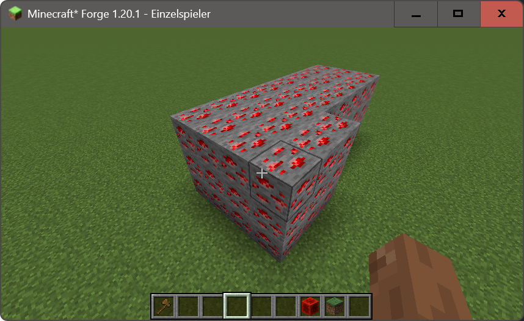
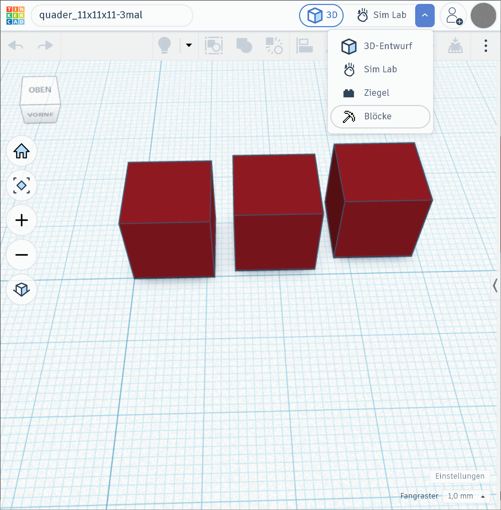
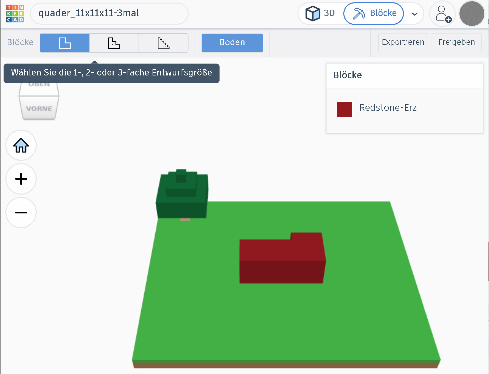
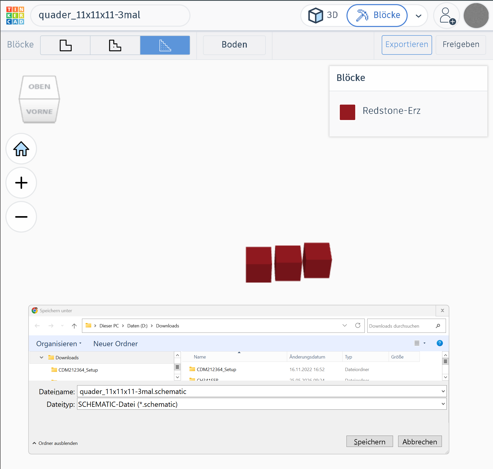

Einführung
Mit Tinkercad lassen sich 3D-Modelle schnell entwerfen, im Minecraft-Blockstil prüfen und anschließend als Schematic-Datei für eine Spielwelt exportieren.
Im Bereich »3D-Entwurf« lassen sich eigene Modelle gestalten und anschließend für Minecraft exportieren. Dabei beobachten wir, wie die 3D-Form mit einem Blockraster in eine Minecraft-Struktur übersetzt wird.

Vom 3D-Entwurf zu Minecraft
Im Bereich »3D-Entwurf« lassen sich eigene Modelle gestalten und anschließend für Minecraft exportieren.
Modell erstellen
Das 3D-Modell umfasst drei rote Quader. Jeder ist 11 mm hoch, 11 mm breit und 11 mm tief.
Die vordere linke Ecke des linken Quaders liegt im Koordinatenursprung. Die anderen beiden Quader sind entlang der X-Achse jeweils um 3 mm und zusätzlich nach hinten versetzt.

Blockdarstellung prüfen
In der Darstellung »Blöcke« werden die Quader als Minecraft-Blöcke angezeigt.
Das ergibt aktuell eine schwer verständliche Darstellung der drei Quader.
Dazu kommen die grüne Platte und ein kleines Bäumchen.
Die Darstellung erfolgt in einfacher Entwurfsgröße.

Modell exportieren
Das Modell wird aus Tinkercad als Schematic-Datei für Minecraft exportiert.

Modell in Minecraft verwenden
Aufgaben
- Erstelle eine Kopie des UFO-Modells in Tinkercad und stelle das UFO auf mindestens drei Beine.
- Exportiere das Modell als Schematic-Datei für Minecraft.
- Platziere die Schematic-Datei in einer Minecraft-Welt.
- Wiederhole den Vorgang für ein vergrößertes Modell deines UFOs.